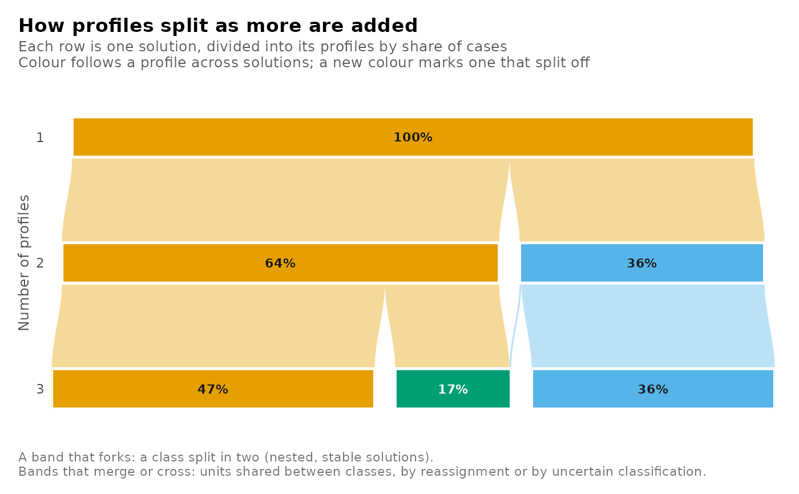

A clustering tree of an enumeration grid: one row per number of classes, one bar per class, and bands between the rows showing where each class's units go in the next solution. At the individual level a tree runs down the numbers of profiles (classes) at one number of group classes and one covariance structure; at the group level, down the numbers of group classes at one number of profiles. A family grid's tree compares its group classes.
Usage
plot_tree(
x,
main = NULL,
subtitle = NULL,
n_group_classes = NULL,
n_profiles = NULL,
model = NULL,
candidates = NULL,
from = NULL,
to = NULL,
level = c("individuals", "groups"),
combine = FALSE
)Arguments
- x
An enumeration grid from
enumerate_classes(),enumerate_lpa(),enumerate_lca()orenumerate_regressions().- main, subtitle
Title and subtitle;
NULL(default) keeps the view's own.- n_group_classes, n_profiles, model
Which trees and rows to draw;
NULL(default) keeps every converged candidate. At the individual leveln_group_classesandmodelchoose the trees andn_profilesthe rows; at the group leveln_profilesandmodelchoose the trees andn_group_classesthe rows. A single count for the rows compares that level's solutions across the trees instead:plot_tree(x, n_profiles = 4, n_group_classes = c(2, 5))draws the four-profile solution at two and at five group classes as two rows.- candidates
Two or more candidate names, drawn as the rows of one tree in the order given. Not with
n_group_classes,n_profilesormodel.- from, to
Two solutions compared as a two-row tree, each named by its class counts
c(n_profiles, n_group_classes)(one count means one group class) or by its candidate name:plot_tree(x, from = c(3, 3), to = c(4, 3)). Given together, not withcandidates.- level
"individuals"(default): the cases divided into profiles;"groups": the groups divided into group classes.- combine
FALSE(default) returns one plot per tree;TRUEdraws every tree as a panel of one plot.
Value
One ggplot for a single tree or combine = TRUE, otherwise a
latents_plots list named by tree. A tree with fewer than two rows
raises latents_no_tree; a name no converged candidate has raises
latents_unknown_candidate.
See also
get_tree() for the flows as a table; plot_enumeration().
Examples
grid <- enumerate_lpa(faithful, c("eruptions", "waiting"),
n_profiles = 1:3, model = "EEI",
n_starts = 2, seed = 1)
plot_tree(grid)
